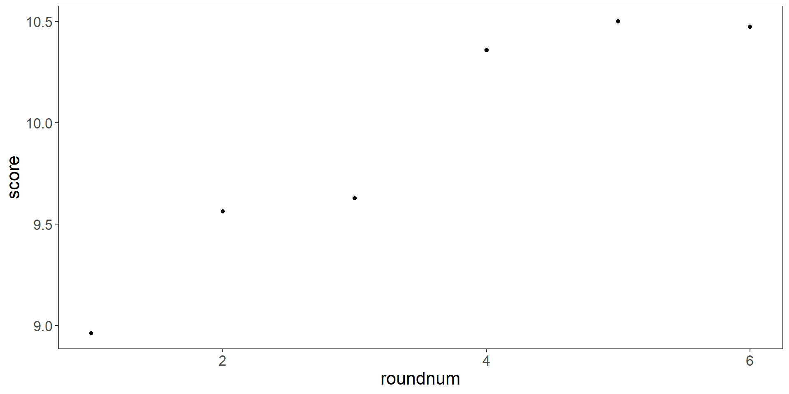
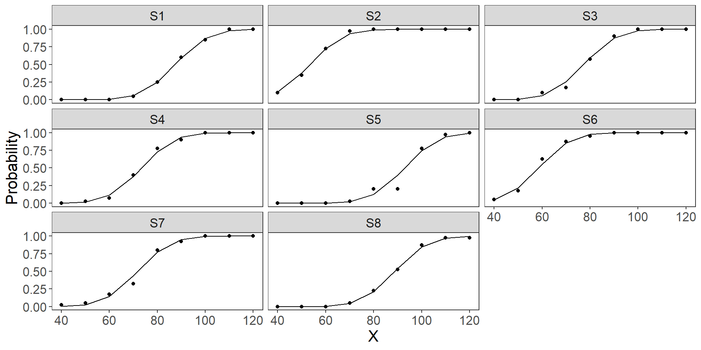

Multi-level modelling and data visualisation in R
Course Overview
- Example 1: why multi-level models, random intercepts, prediction, plotting
- Example 2: more complex multi-level models, model fit problems, inference, publication plotting
- Example 3: calculating psychophysical thresholds using multi-level models
Course materials available on Github.
What’s our approach?
- It is really easy to end up working with statistical techniques we find a bit mystifying
- We want to take a step back and give you a bit more of an intuition about what we are actually doing when we fit mixed effects models
- Focus on trying to understand the broad points
Introductions
Alasdair studied mathematics at the University of Warwick, before obtaining a PhD in Computer Science from Heriot-Watt University. Since then, he has worked at School of Informatics at the University of Edinburgh, and the School of Psychology at the University of Aberdeen, before joining the psychology department at the University of Essex in 2016. His research interests include eye movements during visual search and decision making. Recently, he has been writing a statistics textbook which he will plug now.
Introductions
Anna did her PhD at the University of Cambridge, has since worked at University College London and the University of Exeter, and joined the University of Essex as a lecturer in 2020. Her research focuses on a variety of questions about how humans and other animals might use visual information to search and interact with the world - including how best to optimise camouflage in multiple environments, and exactly why zebras might have stripes. She really likes R, the tidyverse, and very large cups of tea.
Example 1: Tips from the Top
Levari (2022): Tips from the Top
Are people who are good at a task able to give more useful advice to help others complete the same task?
In part of their study, 78 participants completed a Word search game six times.
Do participants get better with practice?
Levari, D. E., Gilbert, D. T., & Wilson, T. D. (2022). Tips from the top: Do the best performers really give the best advice? Psychological Science, 33(5), 685-698.
Data Import
It is good practice to use col_types to make sure read_csv() reads in the data in the correct format.
# A tibble: 468 × 3
participant score roundnum
<fct> <int> <int>
1 ad01 9 1
2 ad01 6 2
3 ad01 9 3
4 ad01 10 4
5 ad01 13 5
6 ad01 11 6
7 ad21 15 1
8 ad21 25 2
9 ad21 20 3
10 ad21 24 4
# ℹ 458 more rowsA simple plot
Improving the plot
Maybe box plots are better?
- The \(x\)-axis is numeric, rather than categorical, so
geom_boxplot()doesn’t quite do what we expect!
Maybe box plots are better?
Improve axis title
- Are people getting better over time?
No Pooling - Linear Regression
Call:
lm(formula = score ~ roundnum, data = d)
Residuals:
Min 1Q Median 3Q Max
-10.073 -4.121 -0.732 2.927 18.610
Coefficients:
Estimate Std. Error t value Pr(>|t|)
(Intercept) 8.804 0.559 15.76 <2e-16 ***
roundnum 0.317 0.143 2.21 0.027 *
---
Signif. codes: 0 '***' 0.001 '**' 0.01 '*' 0.05 '.' 0.1 ' ' 1
Residual standard error: 5.3 on 466 degrees of freedom
Multiple R-squared: 0.0104, Adjusted R-squared: 0.00826
F-statistic: 4.89 on 1 and 466 DF, p-value: 0.0275Total Pooling - Aggregate
Total Pooling - Aggregate
Call:
lm(formula = score ~ roundnum, data = dp)
Residuals:
1 2 3 4 5 6
-0.160 0.125 -0.128 0.286 0.110 -0.233
Coefficients:
Estimate Std. Error t value Pr(>|t|)
(Intercept) 8.8043 0.2111 41.70 2e-06 ***
roundnum 0.3172 0.0542 5.85 0.0043 **
---
Signif. codes: 0 '***' 0.001 '**' 0.01 '*' 0.05 '.' 0.1 ' ' 1
Residual standard error: 0.227 on 4 degrees of freedom
Multiple R-squared: 0.895, Adjusted R-squared: 0.869
F-statistic: 34.2 on 1 and 4 DF, p-value: 0.00426Comparison
- The two approaches give similar estimates for the intercept (8.8) and slope (0.32).
- However, the standard errors (and hence \(t\) and \(p\)-values) are quite different.
- The \(R^2\) values are wildly different: 0.010 v 0.895!
- This is because we are throwing away a lot of the variance in the second model.
We have a lot of variance
What are individuals doing?
Linking up all the points leads to a cluttered plot

What are individuals doing?
We can make things easier to parse with highlights:
What are individuals doing?
Is the best-fit line any good?
It is clear that the residuals are clustered…
- they are different for different people.
Fitting an intercept to each person
- Add
participantas a term in our model!
Call:
lm(formula = score ~ 0 + participant + roundnum, data = d)
Residuals:
Min 1Q Median 3Q Max
-9.492 -1.329 -0.159 1.492 8.960
Coefficients:
Estimate Std. Error t value Pr(>|t|)
participantad01 8.5564 1.0286 8.32 1.5e-15 ***
participantad21 19.2231 1.0286 18.69 < 2e-16 ***
participantad02 2.7231 1.0286 2.65 0.00844 **
participantad22 9.0564 1.0286 8.80 < 2e-16 ***
participantad23 4.0564 1.0286 3.94 9.5e-05 ***
participantad24 6.3897 1.0286 6.21 1.3e-09 ***
participantad03 8.0564 1.0286 7.83 4.6e-14 ***
participantad04 2.5564 1.0286 2.49 0.01336 *
participantad25 7.2231 1.0286 7.02 9.8e-12 ***
participantad54 9.7231 1.0286 9.45 < 2e-16 ***
participantad26 10.5564 1.0286 10.26 < 2e-16 ***
participantad05 16.5564 1.0286 16.10 < 2e-16 ***
participantad27 9.8897 1.0286 9.61 < 2e-16 ***
participantad28 5.0564 1.0286 4.92 1.3e-06 ***
participantad76 5.8897 1.0286 5.73 2.1e-08 ***
participantad29 6.7231 1.0286 6.54 2.0e-10 ***
participantad06 3.8897 1.0286 3.78 0.00018 ***
participantad30 15.7231 1.0286 15.29 < 2e-16 ***
participantad07 7.0564 1.0286 6.86 2.7e-11 ***
participantad31 3.0564 1.0286 2.97 0.00315 **
participantad55 11.8897 1.0286 11.56 < 2e-16 ***
participantad75 5.7231 1.0286 5.56 4.9e-08 ***
participantad56 13.5564 1.0286 13.18 < 2e-16 ***
participantad32 25.0564 1.0286 24.36 < 2e-16 ***
participantad08 8.0564 1.0286 7.83 4.6e-14 ***
participantad33 10.0564 1.0286 9.78 < 2e-16 ***
participantad34 10.2231 1.0286 9.94 < 2e-16 ***
participantad57 6.8897 1.0286 6.70 7.4e-11 ***
participantad35 5.8897 1.0286 5.73 2.1e-08 ***
participantad77 8.3897 1.0286 8.16 4.8e-15 ***
participantad36 11.2231 1.0286 10.91 < 2e-16 ***
participantad58 6.8897 1.0286 6.70 7.4e-11 ***
participantad09 4.7231 1.0286 4.59 5.9e-06 ***
participantad37 6.0564 1.0286 5.89 8.5e-09 ***
participantad38 7.7231 1.0286 7.51 4.1e-13 ***
participantad39 7.0564 1.0286 6.86 2.7e-11 ***
participantad40 11.0564 1.0286 10.75 < 2e-16 ***
participantad41 7.5564 1.0286 7.35 1.2e-12 ***
participantad59 3.5564 1.0286 3.46 0.00061 ***
participantad60 4.5564 1.0286 4.43 1.2e-05 ***
participantad42 7.0564 1.0286 6.86 2.7e-11 ***
participantad10 13.0564 1.0286 12.69 < 2e-16 ***
participantad43 8.7231 1.0286 8.48 4.7e-16 ***
participantad44 3.8897 1.0286 3.78 0.00018 ***
participantad61 5.8897 1.0286 5.73 2.1e-08 ***
participantad11 12.5564 1.0286 12.21 < 2e-16 ***
participantad45 2.8897 1.0286 2.81 0.00521 **
participantad12 9.2231 1.0286 8.97 < 2e-16 ***
participantad62 23.2231 1.0286 22.58 < 2e-16 ***
participantad78 16.5564 1.0286 16.10 < 2e-16 ***
participantad63 14.0564 1.0286 13.67 < 2e-16 ***
participantad64 8.8897 1.0286 8.64 < 2e-16 ***
participantad13 3.2231 1.0286 3.13 0.00186 **
participantad14 4.5564 1.0286 4.43 1.2e-05 ***
participantad15 3.0564 1.0286 2.97 0.00315 **
participantad46 15.7231 1.0286 15.29 < 2e-16 ***
participantad47 13.5564 1.0286 13.18 < 2e-16 ***
participantad65 10.5564 1.0286 10.26 < 2e-16 ***
participantad16 9.8897 1.0286 9.61 < 2e-16 ***
participantad17 11.7231 1.0286 11.40 < 2e-16 ***
participantad66 15.2231 1.0286 14.80 < 2e-16 ***
participantad74 4.7231 1.0286 4.59 5.9e-06 ***
participantad48 3.5564 1.0286 3.46 0.00061 ***
participantad49 2.7231 1.0286 2.65 0.00844 **
participantad50 9.3897 1.0286 9.13 < 2e-16 ***
participantad67 8.5564 1.0286 8.32 1.5e-15 ***
participantad18 5.0564 1.0286 4.92 1.3e-06 ***
participantad68 5.2231 1.0286 5.08 5.9e-07 ***
participantad69 14.2231 1.0286 13.83 < 2e-16 ***
participantad70 8.2231 1.0286 7.99 1.5e-14 ***
participantad51 5.0564 1.0286 4.92 1.3e-06 ***
participantad19 18.0564 1.0286 17.55 < 2e-16 ***
participantad52 14.7231 1.0286 14.31 < 2e-16 ***
participantad20 8.8897 1.0286 8.64 < 2e-16 ***
participantad53 0.8897 1.0286 0.86 0.38758
participantad71 9.8897 1.0286 9.61 < 2e-16 ***
participantad72 11.0564 1.0286 10.75 < 2e-16 ***
participantad73 4.8897 1.0286 4.75 2.8e-06 ***
roundnum 0.3172 0.0664 4.78 2.5e-06 ***
---
Signif. codes: 0 '***' 0.001 '**' 0.01 '*' 0.05 '.' 0.1 ' ' 1
Residual standard error: 2.45 on 389 degrees of freedom
Multiple R-squared: 0.96, Adjusted R-squared: 0.952
F-statistic: 120 on 79 and 389 DF, p-value: <2e-16This fits great!

Disadvantages of this approach
This model fits the data fantastically well: \(R^2=0.96\)!
However, there are a few downsides:
- It has 80 parameters! This seems overly complex.
- If a new participant comes along, we have no way to estimate their performance.
The solution is to model the variability in intercepts.
Multi-level Models
- For participant \(k\) we fit:
\[y^k = (a + a_k) + bx + \epsilon\]
- We assume that the \(a^k\) are normally distributed:
\[a_k \sim \mathcal{N}(0, \theta_a)\]
- This model has three main parameters: \(a, b\) and \(\theta_a\).
Multi-level Models with lme4
lme4is a popular package for R that allows us to fit these models.- The main function is
lmer(): linear mixed effect regression. - The syntax is similar to the usual
lm()syntax.
summary() for lmer
Linear mixed model fit by REML ['lmerMod']
Formula: score ~ roundnum + (1 | participant)
Data: d
REML criterion at convergence: 2415
Scaled residuals:
Min 1Q Median 3Q Max
-3.878 -0.559 -0.072 0.600 3.649
Random effects:
Groups Name Variance Std.Dev.
participant (Intercept) 22.26 4.72
Residual 6.02 2.45
Number of obs: 468, groups: participant, 78
Fixed effects:
Estimate Std. Error t value
(Intercept) 8.8043 0.5935 14.83
roundnum 0.3172 0.0664 4.78
Correlation of Fixed Effects:
(Intr)
roundnum -0.392- The output does not give \(p\)-values or model fit criteria.
Random Effects
- The main new part of the model summary is an overview of the random effects.
- In our case, these are the intercepts that vary from person to person.
Facet Plots
Using predict()
If we call predict() with no newdata argument, it will make a prediction for every point in our training data
- The
predict()function for multi-level models is quite versatile and can take many different options - For now, we can add these predictions to our plot as another layer:
Our Model Predictions
Distribution of Intercepts
Summary
The random intercept model allows us to model more of the variance in the data without having too many new parameters.
We could use this model to simulate a whole new set of participants.
Facet plots and highlights are useful to to visualise what is going on.
Remember to think about the random effect structure in your model - this is often overlooked when reporting models.
Workbook
We’ll now have a few minutes for you to do some coding yourselves
Either review the material so far (recommended if this is all fairly new to you)
Or there’s a data processing/plotting challenge
Please ask us questions!
Example 2: In-out asymmetry in crowding
In-out asymmetry
Do peripheral flankers interfere more with a target than foveal flankers?
Does this effect depend on location?
Chakravarthi R, Rubruck J, Kipling N, Clarke ADF. Characterizing the in-out asymmetry in visual crowding. J Vis. 2021 Oct 5;21(11):10
Data for this example available at https://osf.io/jdfmn.
Thresholds and data import
Thresholds were calculated from QUEST in MATLAB.
Tidying your data
We won’t dwell on this today, but you will almost certainly find your raw data needs some processing before analysis.
This can be a time consuming process! But nearly always worth the time investment.
Looking at the data
observer des fla loc thr
Min. : 1.0 b:456 n:456 r:342 Min. :0.2
1st Qu.:10.0 p:456 i:456 u:342 1st Qu.:0.3
Median :19.5 r:456 o:456 l:342 Median :0.6
Mean :19.5 d:342 Mean :1.1
3rd Qu.:29.0 3rd Qu.:1.8
Max. :38.0 Max. :4.7
NA's :61 - des: design (we’re not going to worry about this today)
- fla: flankers (none, inwards, outwards)
- loc: location (up, down, left, right)
Missing data
We have some non-finite threshold values. We probably just want to remove them.
Some basic plotting
- Low thresholds when there’s no flanker
- Thresholds increase when adding a flanker, but more if the flanker is outwards
Some basic plotting
- Maybe some differences depending on location? Up and down have larger thresholds in the inside condition?
Fitting a multi-level model
We want to take into account the fact that we are running a repeated measures design, where each participant takes part in multiple trials.
- How does threshold vary with location?
- How does the effect of threshold vary with flanker type?
- Take into account multiple data points for each observer using random intercepts
Fitting a multi-level model
Linear mixed model fit by REML ['lmerMod']
Formula: thr ~ loc + loc:fla + (1 | observer)
Data: d
REML criterion at convergence: 2677
Scaled residuals:
Min 1Q Median 3Q Max
-3.216 -0.490 -0.101 0.418 4.376
Random effects:
Groups Name Variance Std.Dev.
observer (Intercept) 0.064 0.253
Residual 0.421 0.649
Number of obs: 1307, groups: observer, 38
Fixed effects:
Estimate Std. Error t value
(Intercept) 0.24439 0.07331 3.33
locu 0.15528 0.08590 1.81
locl 0.00754 0.08590 0.09
locd 0.08546 0.08590 0.99
locr:flai 0.55950 0.08694 6.44
locu:flai 0.73384 0.08590 8.54
locl:flai 0.46329 0.08590 5.39
locd:flai 0.64239 0.08738 7.35
locr:flao 1.96123 0.08850 22.16
locu:flao 2.20829 0.08854 24.94
locl:flao 1.94759 0.09034 21.56
locd:flao 1.88141 0.08716 21.59
Correlation of Fixed Effects:
(Intr) locu locl locd locr:flai locu:flai locl:flai locd:flai
locu -0.586
locl -0.586 0.500
locd -0.586 0.500 0.500
locr:flai -0.579 0.494 0.494 0.494
locu:flai 0.000 -0.500 0.000 0.000 0.000
locl:flai 0.000 0.000 -0.500 0.000 0.000 0.000
locd:flai 0.000 0.000 0.000 -0.492 0.002 0.000 0.000
locr:flao -0.569 0.485 0.485 0.485 0.479 0.000 0.000 0.000
locu:flao 0.000 -0.485 0.000 0.000 0.000 0.485 0.000 0.000
locl:flao 0.000 0.000 -0.475 0.000 0.000 0.000 0.475 0.000
locd:flao 0.000 0.000 0.000 -0.493 0.000 0.000 0.000 0.484
locr:flao locu:flao locl:flao
locu
locl
locd
locr:flai
locu:flai
locl:flai
locd:flai
locr:flao
locu:flao 0.001
locl:flao 0.001 0.001
locd:flao 0.001 0.001 0.000 Fitting a multi-level model: random slopes
We can do better than this: each person may not only have their own variable intercept, but their own variable slope i.e. how their thresholds are affected by the fixed factors of interest.
Fitting a multi-level model: random slopes
Linear mixed model fit by REML ['lmerMod']
Formula: thr ~ loc + loc:fla + (loc + fla | observer)
Data: d
REML criterion at convergence: 2238
Scaled residuals:
Min 1Q Median 3Q Max
-3.800 -0.403 -0.037 0.228 5.244
Random effects:
Groups Name Variance Std.Dev. Corr
observer (Intercept) 0.0213 0.146
locu 0.0444 0.211 -0.94
locl 0.0646 0.254 -0.86 0.63
locd 0.0463 0.215 -0.91 0.97 0.59
flai 0.2583 0.508 -0.44 0.48 0.35 0.34
flao 0.4646 0.682 0.37 -0.53 -0.10 -0.43 0.07
Residual 0.2613 0.511
Number of obs: 1307, groups: observer, 38
Fixed effects:
Estimate Std. Error t value
(Intercept) 0.24439 0.05341 4.58
locu 0.15528 0.07585 2.05
locl 0.00754 0.07927 0.10
locd 0.08546 0.07617 1.12
locr:flai 0.60411 0.10734 5.63
locu:flai 0.73384 0.10669 6.88
locl:flai 0.46329 0.10669 4.34
locd:flai 0.71428 0.10762 6.64
locr:flao 2.02152 0.13108 15.42
locu:flao 2.25341 0.13101 17.20
locl:flao 1.94672 0.13226 14.72
locd:flao 1.90387 0.13037 14.60
Correlation of Fixed Effects:
(Intr) locu locl locd locr:flai locu:flai locl:flai locd:flai
locu -0.753
locl -0.739 0.529
locd -0.749 0.597 0.520
locr:flai -0.550 0.447 0.410 0.400
locu:flai -0.151 -0.117 0.142 0.120 0.594
locl:flai -0.151 0.166 -0.129 0.120 0.594 0.597
locd:flai -0.150 0.165 0.140 -0.160 0.591 0.592 0.592
locr:flao -0.190 0.030 0.178 0.064 0.208 0.046 0.046 0.046
locu:flao 0.138 -0.431 -0.043 -0.166 0.046 0.210 0.046 0.045
locl:flao 0.137 -0.199 -0.261 -0.164 0.045 0.046 0.208 0.045
locd:flao 0.139 -0.202 -0.043 -0.397 0.046 0.046 0.046 0.209
locr:flao locu:flao locl:flao
locu
locl
locd
locr:flai
locu:flai
locl:flai
locd:flai
locr:flao
locu:flao 0.714
locl:flao 0.707 0.706
locd:flao 0.717 0.718 0.708
optimizer (nloptwrap) convergence code: 0 (OK)
boundary (singular) fit: see help('isSingular')Fitting a multi-level model: random slopes
Why could we not do this in Example 1?
We only had one data point per participant per treatment level: this means between-participant variation in how they are affected by the within-participant predictor is confounded with random error (i.e. measurement error) and therefore we can only fit random intercepts.
Where possible, design your experiments with multiple repeats per treatment level!
Fitting a multi-level model: improving the model
For a model with categorical factors, the default R behaviour where the baseline category is labelled as the intercept can be unhelpful.
Fitting a multi-level model: improving the model
Linear mixed model fit by REML ['lmerMod']
Formula: thr ~ 0 + loc + loc:fla + (0 + loc + fla | observer)
Data: d
REML criterion at convergence: 2238
Scaled residuals:
Min 1Q Median 3Q Max
-3.800 -0.403 -0.037 0.226 5.244
Random effects:
Groups Name Variance Std.Dev. Corr
observer locr 0.02136 0.1462
locu 0.00813 0.0902 -0.57
locl 0.02231 0.1494 -0.48 -0.41
locd 0.01021 0.1010 -0.50 0.86 -0.46
flai 0.25343 0.5034 -0.41 0.46 0.20 0.13
flao 0.45819 0.6769 0.40 -0.58 0.23 -0.34 0.06
Residual 0.26128 0.5112
Number of obs: 1307, groups: observer, 38
Fixed effects:
Estimate Std. Error t value
locr 0.2444 0.0534 4.57
locu 0.3997 0.0501 7.98
locl 0.2519 0.0537 4.70
locd 0.3298 0.0506 6.52
locr:flai 0.6041 0.1067 5.66
locu:flai 0.7338 0.1061 6.92
locl:flai 0.4633 0.1061 4.37
locd:flai 0.7141 0.1070 6.67
locr:flao 2.0215 0.1304 15.50
locu:flao 2.2534 0.1304 17.29
locl:flao 1.9467 0.1316 14.79
locd:flao 1.9038 0.1297 14.68
Correlation of Fixed Effects:
locr locu locl locd locr:flai locu:flai locl:flai locd:flai
locu -0.074
locl -0.096 -0.055
locd -0.071 0.081 -0.067
locr:flai -0.541 0.103 0.070 0.031
locu:flai -0.140 -0.328 0.070 0.031 0.589
locl:flai -0.140 0.103 -0.332 0.031 0.589 0.593
locd:flai -0.139 0.103 0.070 -0.392 0.586 0.587 0.587
locr:flao -0.178 -0.144 0.087 -0.093 0.200 0.036 0.036 0.036
locu:flao 0.151 -0.495 0.087 -0.093 0.036 0.202 0.036 0.036
locl:flao 0.150 -0.143 -0.239 -0.092 0.036 0.036 0.200 0.036
locd:flao 0.152 -0.145 0.087 -0.443 0.036 0.036 0.036 0.201
locr:flao locu:flao locl:flao
locu
locl
locd
locr:flai
locu:flai
locl:flai
locd:flai
locr:flao
locu:flao 0.711
locl:flao 0.705 0.703
locd:flao 0.714 0.715 0.705
optimizer (nloptwrap) convergence code: 0 (OK)
Model failed to converge with max|grad| = 0.0115121 (tol = 0.002, component 1)Fitting a multi-level model: improving the model
Is a Gaussian distribution a good model for thresholds? Thresholds can’t be negative!
We could use a log-normal distribution instead.
Note this means we will need to switch to a new package for multi-level modelling: glmmTMB (as lme4 doesn’t have this distribution built in).
Fitting a multi-level model: improving the model
library(glmmTMB)
m4 <- glmmTMB(thr ~ 0 + loc + loc:fla + (0 + loc + fla|observer),
family = lognormal, data = d)
summary(m4) Family: lognormal ( log )
Formula: thr ~ 0 + loc + loc:fla + (0 + loc + fla | observer)
Data: d
AIC BIC logLik deviance df.resid
NA NA NA NA 1273
Random effects:
Conditional model:
Groups Name Variance Std.Dev. Corr
observer locr 0.04961 0.2227
locu 0.00748 0.0865 -0.44
locl 0.04573 0.2138 -0.47 -0.47
locd 0.01180 0.1086 -0.64 0.33 -0.09
flai 0.08594 0.2932 -0.11 0.24 -0.06 0.02
flao 0.11285 0.3359 0.47 -0.86 0.19 -0.07 0.00
Number of obs: 1307, groups: observer, 38
Dispersion parameter for lognormal family (): 0.51
Conditional model:
Estimate Std. Error z value Pr(>|z|)
locr -0.8137 0.0627 -12.98 < 2e-16 ***
locu -0.4595 0.0445 -10.33 < 2e-16 ***
locl -0.7836 0.0607 -12.91 < 2e-16 ***
locd -0.5771 0.0477 -12.11 < 2e-16 ***
locr:flai 0.4603 0.0790 5.83 5.6e-09 ***
locu:flai 0.5669 0.0701 8.08 6.3e-16 ***
locl:flai 0.4298 0.0780 5.51 3.5e-08 ***
locd:flai 0.6425 0.0726 8.85 < 2e-16 ***
locr:flao 1.4202 0.0780 18.20 < 2e-16 ***
locu:flao 1.3995 0.0719 19.47 < 2e-16 ***
locl:flao 1.3718 0.0779 17.61 < 2e-16 ***
locd:flao 1.2915 0.0737 17.53 < 2e-16 ***
---
Signif. codes: 0 '***' 0.001 '**' 0.01 '*' 0.05 '.' 0.1 ' ' 1Model fit problems
Very common to get singular fits, models failing to converge etc.
There can be problems with the model specification:
- Overly complex with many interacting variables
- Collinear predictors that measure related concepts
- Including between-subjects variables in the random effect structure
Model fit problems
Can also be problems with the data:
- Not enough data to fit a complex model
- Variables on different scales
- Very noisy, some weird responses
- Floor/ceiling effects
Model fit problems
- Simplify your model as a last resort!
- Ideally, simulate your data before conducting your experiment to test if your question is feasible
- Bayesian models can help avoid some of the pitfalls of LMMs (but have their own challenges!)
Model inference
You may have noticed lme4 doesn’t automatically give p-values.
This is because it’s not immediately clear how to count the degrees of freedom. There is no one correct, agreed up on way of doing this!
- Do we count every unique, individual data point?
- Maybe it would be better to count the number of participants?
- Maybe we should count the number of random effects
- Or some combination??
Model inference
- Satterthwaite approximation via
lmerTest - Model comparison via likelihood ratio test
glmmTMBgives Wald p values (but these can be quite anti-conservative!)
Always think: do you need p-values? What are you trying to say with them?
Making model predictions
These are population-level predictions.
Deterministic - always the same for any given combination of predictors.
Making model predictions
We can make predictions for ‘new participants’…
Making model predictions
… but they will always be the same (random effects are set to zero!)
Making model simulations
I.e. predictions that take the random effects into account.
Using model simulations for inference
d_predict <- d_sim %>%
select(-thr, - p) %>%
pivot_wider(names_from = fla, values_from = s) %>%
mutate(prob_nlowest = n < mean(i+o, na.rm = TRUE),
prob_ilessthano = i < o, na.rm = TRUE)
# What percentage have no flankers as the lowest threshold?
mean(d_predict$prob_nlowest)[1] 0.995# What percentage have inner flankers as a lower threshold than outer flankers?
mean(d_predict$prob_ilessthano, na.rm = TRUE)[1] 0.889Plotting your model fit
First we write a little function to create better variable names for plotting.
short_to_long_names <- function(d) {
d %>% rename(
flanker = "fla",
location = "loc",
design = "des",
threshold = "thr") %>%
mutate(
flanker = fct_recode(flanker, none = "n", inwards = "i", outwards = "o"),
location = fct_recode(location, up = "u", left = "l", right = "r", down = "d"),
design = fct_recode(design, precued = "p", randomised = "r", blocked = "b")) -> d
return(d)
}Plotting your model fit
We use our function to do some setting up.
d_plt <- d %>%
short_to_long_names() %>%
mutate(
x = 0, y= 0,
x = if_else(location == "right", threshold, x),
x = if_else(location == "left", -threshold,x ),
y = if_else(location == "up", threshold, y),
y = if_else(location == "down", -threshold, y)
)
d_plot <- d %>%
mutate(thr =predict(m4, type = "response")) %>%
short_to_long_names() %>%
mutate(
threshold = if_else(location %in% c("down", "left"), -threshold, threshold))Plotting your model fit
We’ll begin by plotting the up and down data.
Plotting your model fit
Plotting your model fit
We can then add the left and right data.
plt <- ggplot() +
geom_jitter(data = filter(d_plt,
location %in% c("up", "down"),
flanker %in% c("none", "inwards", "outwards")) ,
aes(x, y, group = flanker),
width = .2, height = 0, alpha = 0.5, colour = "darkred", shape = 4) +
geom_jitter(data = filter(d_plt,
location %in% c("left", "right"),
flanker %in% c("none", "inwards", "outwards")) ,
aes(x, y, group = flanker),
width = 0, height = 0.2, alpha = 0.5, colour = "darkred", shape = 4) Plotting your model fit
Plotting your model fit
We will add the model predictions (as a violin plot).
plt <- ggplot() +
geom_jitter(data = filter(d_plt,
location %in% c("up", "down"),
flanker %in% c("none", "inwards", "outwards")) ,
aes(x, y, group = flanker),
width = .2, height = 0, alpha = 0.5, colour = "darkred", shape = 4) +
geom_jitter(data = filter(d_plt,
location %in% c("left", "right"),
flanker %in% c("none", "inwards", "outwards")) ,
aes(x, y, group = flanker),
width = 0, height = 0.2, alpha = 0.5, colour = "darkred", shape = 4) +
geom_violin(data = filter(d_plot,
location %in% c("up", "down"),
flanker %in% c("none", "inwards", "outwards")),
aes(x = 0, y = threshold, group = location),
width = 1, alpha = 0.33, trim = FALSE,
position = position_identity(),
fill = "black") +
geom_violin(data = filter(d_plot,
location %in% c("left", "right"),
flanker %in% c("none", "inwards", "outwards")),
aes(x = threshold, y= 0, group = location),
width = 1, alpha = 0.33, trim = FALSE,
position = position_identity(),
fill = "black")Plotting your model fit
Plotting your model fit
Finally, we’ll split the plot into different facets for each flanker type.
plt <- ggplot() +
geom_jitter(data = filter(d_plt,
location %in% c("up", "down"),
flanker %in% c("none", "inwards", "outwards")) ,
aes(x, y, group = flanker),
width = .2, height = 0, alpha = 0.5, colour = "darkred", shape = 4) +
geom_jitter(data = filter(d_plt,
location %in% c("left", "right"),
flanker %in% c("none", "inwards", "outwards")) ,
aes(x, y, group = flanker),
width = 0, height = 0.2, alpha = 0.5, colour = "darkred", shape = 4) +
geom_violin(data = filter(d_plot,
location %in% c("up", "down"),
flanker %in% c("none", "inwards", "outwards")),
aes(x = 0, y = threshold, group = location),
width = 1, alpha = 0.33, trim = FALSE,
position = position_identity(),
fill = "black") +
geom_violin(data = filter(d_plot,
location %in% c("left", "right"),
flanker %in% c("none", "inwards", "outwards")),
aes(x = threshold, y= 0, group = location),
width = 1, alpha = 0.33, trim = FALSE,
position = position_identity(),
fill = "black") +
coord_fixed(xlim = c(-5, 5), ylim = c(-5, 5)) +
scale_x_continuous("Threshold (degrees)") +
scale_y_continuous("Threshold (degrees)") +
facet_grid(~ flanker)Plotting your model fit
Summary
- Random effects structures can include both slopes and intercepts
- Model fit problems are (unfortunately) common - think carefully about your data collection and model structure
- Many approaches to inference - what question are you trying to ask?
- Build up publication-ready plots slowly!
Psychophysics
Psychophysics as multi-level models
- In the previous example, our data consisted of pre-computed thresholds
- However, we can use multi-level models to compute our psychometric thresholds
- Modelling psychophysical data at the population level
Simulating data
We are using simulated data from the MixedPsy package for simplicity here.
Fitting a model
Model summary
Generalized linear mixed model fit by maximum likelihood (Laplace
Approximation) [glmerMod]
Family: binomial ( probit )
Formula: cbind(Longer, Total - Longer) ~ X + (X | Subject)
Data: d
AIC BIC logLik deviance df.resid
219 230 -104 209 67
Scaled residuals:
Min 1Q Median 3Q Max
-2.944 -0.212 0.033 0.416 3.323
Random effects:
Groups Name Variance Std.Dev. Corr
Subject (Intercept) 1.39e+00 1.179741
X 2.86e-07 0.000535 1.00
Number of obs: 72, groups: Subject, 8
Fixed effects:
Estimate Std. Error z value Pr(>|z|)
(Intercept) -6.85714 0.49033 -14.0 <2e-16 ***
X 0.09106 0.00338 26.9 <2e-16 ***
---
Signif. codes: 0 '***' 0.001 '**' 0.01 '*' 0.05 '.' 0.1 ' ' 1
Correlation of Fixed Effects:
(Intr)
X -0.462
optimizer (Nelder_Mead) convergence code: 0 (OK)
boundary (singular) fit: see help('isSingular')Setting up data for prediction
Making predictions
Plotting data and model predictions
PSEs
(Intercept)
75.3 ================================================================================
[1] "JND 95 % CI: 6.80722903497503 8.00491563431959"
[1] "PSE 95 % CI: 64.7973482650194 83.9265612210936" Estimate Inferior Superior
JND 7.41 6.81 8.0
PSE 75.30 64.80 83.9PSEs by participant
PSEs by participant, bootstrapped
fun2mod = function(mer.obj){
#allocate space: we'll just work out subj 1 and 2 for now
jndpse = vector(mode = "numeric", length = 2)
names(jndpse) = c("ppt1", "ppt2")
jndpse[1] = -(fixef(mer.obj)[1]+ranef(mer.obj)$Subject[1,1])/(fixef(mer.obj)[2]+ranef(mer.obj)$Subject[1,2]) #ppt1
jndpse[2] = -(fixef(mer.obj)[1]+ranef(mer.obj)$Subject[2,1])/(fixef(mer.obj)[2]+ranef(mer.obj)$Subject[2,2]) #ppt2
return(jndpse)
}
ppt_bootstrap_estimate <- pseMer(m, B = 100, FUN = fun2mod)================================================================================
[1] "ppt1 95 % CI: 47.2726866555667 107.363126527741"
[1] "ppt2 95 % CI: 48.7738987746106 102.704689098633" Estimate Inferior Superior
ppt1 87.4 47.3 107
ppt2 53.4 48.8 103Summary
- Mixed models have benefits for calculating psychophysical curves - can take into account information about trial repetitions, subject-specific variability, can easily assess goodness of fit
- Lots of helpful tutorials available here
Final summary
- We (hopefully) now have time to do more workbook exercises
- Do ask us any questions you have! (If not now, find us during the conference)
Clarke & Hughes 2024